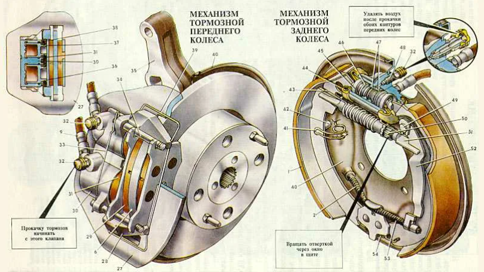

Тормозная система - это совокупность устройств, предназначенных для управляемого снижения скорости автомобиля, его полной остановки и удержания на месте. Это одна из важнейших систем активной безопасности, от исправности и эффективности которой напрямую зависит жизнь и здоровье водителя, пассажиров и других участников дорожного движения. Современные тормозные системы являются сложными механизмами, часто интегрированными с электронными системами помощи водителю.
Орган управления, с помощью которого водитель воздействует на тормозную систему. Усилие, прилагаемое к педали, преобразуется в давление в гидравлической (или пневматической) системе.
Устройство, использующее разрежение во впускном коллекторе двигателя (или специальный вакуумный насос) для увеличения усилия, передаваемого от педали тормоза к главному тормозному цилиндру. Значительно снижает усилие на педали, необходимое для эффективного торможения.
Преобразует усилие от педали тормоза (с учетом работы усилителя) в гидравлическое давление тормозной жидкости. Обычно имеет два независимых контура для повышения надежности системы (при отказе одного контура другой продолжает работать).
Система трубок и гибких шлангов, по которым тормозная жидкость под давлением подается от ГТЦ к колесным тормозным механизмам.
Устройства, непосредственно создающие тормозной момент на колесах. Бывают дисковыми или барабанными.
Фрикционные элементы, непосредственно контактирующие с тормозным диском или барабаном для создания силы трения. Изготавливаются из специальных износостойких материалов.